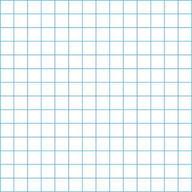
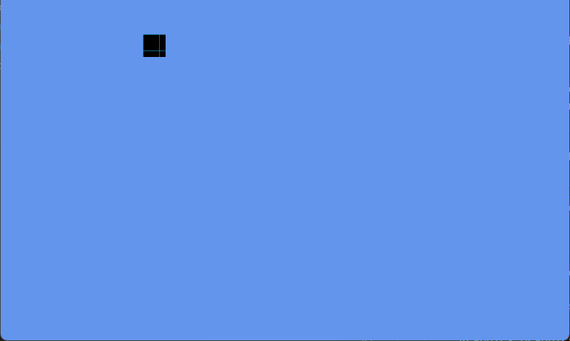

The example is very basic but the principles are the same, when drawing to a Render Texture we apply the following process.
- Set the Graphics Device to output to a texture.
- Clear the buffer (or not depending on the use case).
- Draw the full screen contents required in the Render Texture, e.g. a map or camera view.
- Reset the Graphics device to the back buffer (screen).
- Draw your game as normal.
- Draw the Render Texture to the screen in the position we desire (e.g. in the lower corner for a mini-map), most likely on top of your game graphics.
The technique is very useful, especially if you are doing split-screen gaming and need to draw multiple camera views.
Requirements
This sample uses a grid texture (available below) to draw to the RenderTarget2D before then rendering the contents of the Render Target to the screen as a texture.

Download the Grid texture and add it to your Content Project for this example. (see How to Add Content for more information on this.)
Creating a Render Target
Declare variables for a render target using the RenderTarget2D class, for this example we will also be using a Texture2D for the "grid" texture we will output to the
Render Target.SpriteBatch spriteBatch; Texture2D grid; RenderTarget2D renderTarget;Create the render target, giving it the same size as the back buffer, ideally in the Game.LoadContent method or later.
renderTarget = new RenderTarget2D( GraphicsDevice, GraphicsDevice.PresentationParameters.BackBufferWidth, GraphicsDevice.PresentationParameters.BackBufferHeight);Load the "grid" texture, which contains vertical and horizontal lines.
protected override void LoadContent() { // Create a new SpriteBatch, which can be used to draw textures. spriteBatch = new SpriteBatch(GraphicsDevice); // using "grid" which matches the NAME of the grid texture in the content project. grid = Content.Load<Texture2D>("grid"); }Render the "grid" texture to the render target.
Rendering to a RenderTarget2D changes the Graphics Device output to write to a
textureinstead of the screen. Once you have finished rendering to the RenderTarget2D you MUST reset the GraphicsDevice Render Target tonullto return to drawing to the screen / back buffer.The example function below, sets the render target on the device, draws the texture (to the render target) using a SpriteBatch. When rendering is complete, it then resets the device render target to
null(which resets the device to the back buffer).private void DrawRenderTarget() { // Set the device to the render target graphicsDeviceManager.GraphicsDevice.SetRenderTarget(renderTarget); // Clear the graphics buffer to a solid color graphicsDeviceManager.GraphicsDevice.Clear(Color.Black); // Draw the "grid" texture to the graphics buffer, currently outputting to the Render Texture. spriteBatch.Begin(); Vector2 pos = Vector2.Zero; spriteBatch.Draw(grid, pos, Color.White); spriteBatch.End(); // Reset the device to the back buffer graphicsDeviceManager.GraphicsDevice.SetRenderTarget(null); }Draw the render target texture to the back buffer.
With the render target populated using the
DrawRenderTargetfunction, we can then draw the output to the screen.protected override void Draw(GameTime gameTime) { // Populate the RenderTarget DrawRenderTarget(); // Clear the screen graphicsDeviceManager.GraphicsDevice.Clear(Color.CornflowerBlue); // Draw the contents of the Render Target texture spriteBatch.Begin(); spriteBatch.Draw((Texture2D)renderTarget, new Vector2(200, 50), // x,y position new Rectangle(0, 0, 32, 32), // just one grid Color.White // no color scaling ); spriteBatch.End(); base.Draw(gameTime); }
The final output should look like the following:

Rendering a 32 by 32 square from the RenderTarget texture to a position 200 x 50 on the screen.